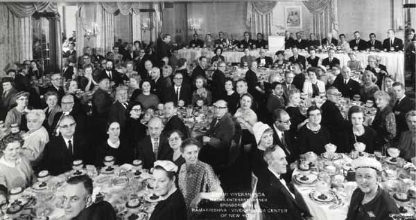
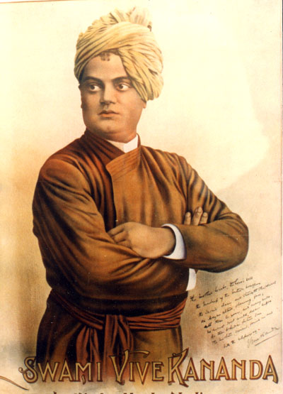
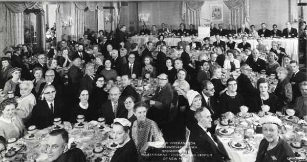
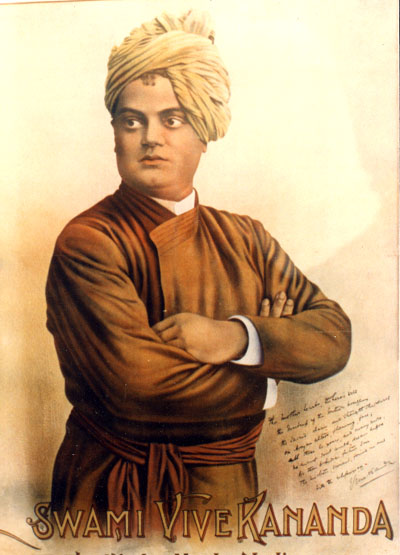

Ramakrishna-Vivekenanda Center of New York
Image Gallery
Swami Vivekananda Birth Centenary
April 25, 1983

 



In 1963, on the occasion of the Centenary of Swami Vivekananda's birth, a banquet was held at New York's Warwick Hotel, with Secretary General of the United Nations U Thant as keynote speaker and Chester F. Carlson, president of the Center, presiding. On this occasion the Center received many messages of congratulation, one of which was from India's Prime Minister, Jawaharlal Nehru, who wrote that the life and teaching of Swami Vivekananda "inspired my generation and continue to inspire our people today....his message was not confined to India only, but was for the whole world. I pay my homage to his memory."